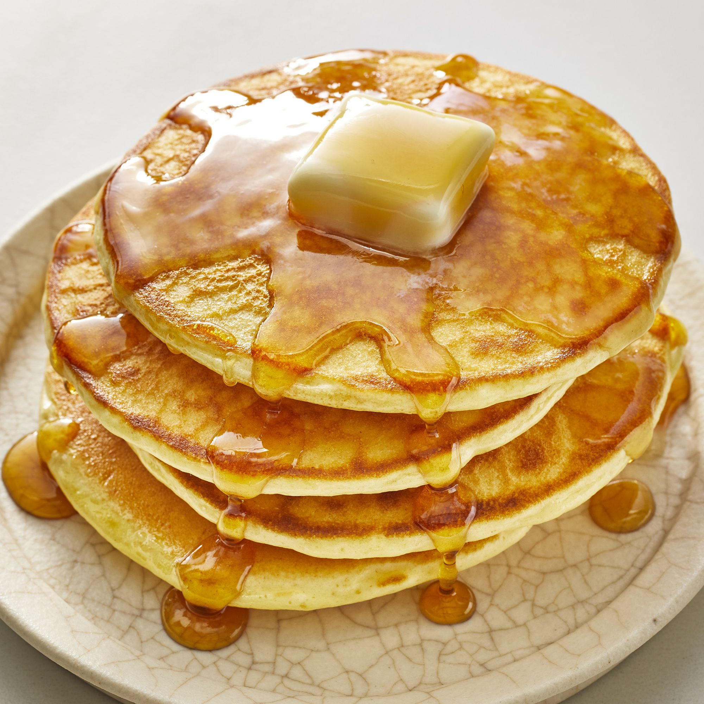

Good Old-Fashioned Pancakes

Perfect pancakes are easier to make than you think. This pancake recipe produces thick, fluffy, and all-around delicious pancakes with just a few ingredients.
Ingredients:
- Flour
- Sugar
- Milk
- Eggs
- Baking Powder
- Butter
- Salt
Steps:
- Sift the dry ingredients together.
- Make a well, then add the wet ingredients. Stir to combine.
- Scoop the batter onto a hot griddle or pan.
- Cook for two or three minutes, then flip.
- Continue cooking until brown on both sides.